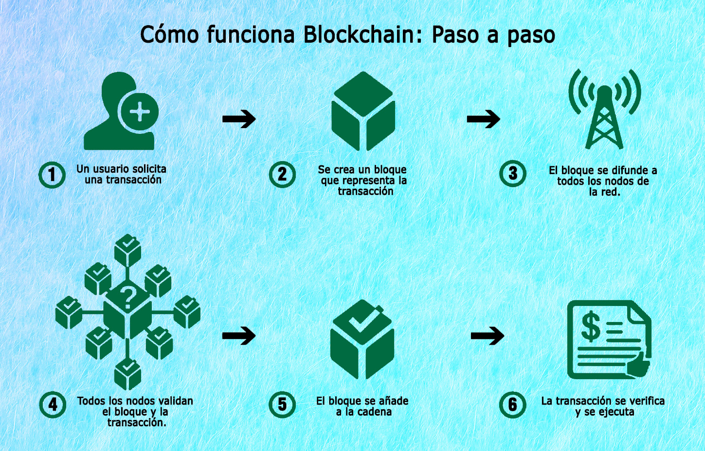

Una cadena de bloques,conocida en inglés como blockchain,es una estructura de datos cuya información se agrupa en conjuntos (bloques) a los que se les añade metainformaciones relativas a otro bloque de la cadena anterior en una línea temporal. De esta forma, gracias a técnicas criptográficas, la información contenida en un bloque solo puede ser repudiada o editada modificando todos los bloques posteriores. Esta propiedad permite su aplicación en un entorno distribuido de manera que la estructura de datos blockchain puede ejercer de base de datos pública no relacional que contenga un histórico irrefutable de información.
En la práctica ha permitido, gracias a la criptografía asimétrica y las funciones de resumen o hash, la implementación de un registro contable (ledger) distribuido que permite soportar y garantizar la seguridad de dinero digital. Siguiendo un protocolo apropiado para todas las operaciones efectuadas sobre la blockchain, es posible alcanzar un consenso sobre la integridad de sus datos por parte de todos los participantes de la red sin necesidad de recurrir a una entidad de confianza que centralice la información. Por ello se considera una tecnología en la que la "verdad" (estado confiable del sistema) es construida,
alcanzada y fortalecida por los propios miembros; incluso en un entorno en el que exista una minoría de nodos en la red con comportamiento malicioso (nodos sybil) dado que, en teoría, para comprometer los datos, un atacante requeriría de una mayor potencia de cómputo y presencia en la red que el resultante de la suma de todos los restantes nodos combinados.

Por las razones anteriores, la tecnología blockchain es especialmente adecuada para escenarios en los que se requiera almacenar de forma creciente datos ordenados en el tiempo, sin posibilidad de modificación ni revisión y cuya confianza pretenda ser
distribuida en lugar de residir en una entidad certificadora. Este enfoque tiene diferentes aspectos:
-Almacenamiento de datos: se logra mediante la replicación de la información de la cadena de bloques
-Transmisión de datos: se logra mediante redes de pares.
-Confirmación de datos: se logra mediante un proceso de consenso entre los nodos participantes. El tipo de algoritmo de consenso más utilizado es el de prueba de trabajo en el que hay un proceso abierto competitivo y transparente de validación de las nuevas entradas llamada minería.
-El concepto de cadena de bloque fue aplicado por primera vez en 2009 como parte de Bitcoin.
-Los datos almacenados en la cadena de bloques normalmente suelen ser transacciones (p. ej. financieras) por eso es frecuente llamar a los datos transacciones. Sin embargo, no es necesario que lo sean. Realmente podríamos considerar que lo que se registran son cambios atómicos del estado del sistema. Por ejemplo una cadena de bloques puede ser usada para estampillar documentos y asegurarlos frente a alteraciones.